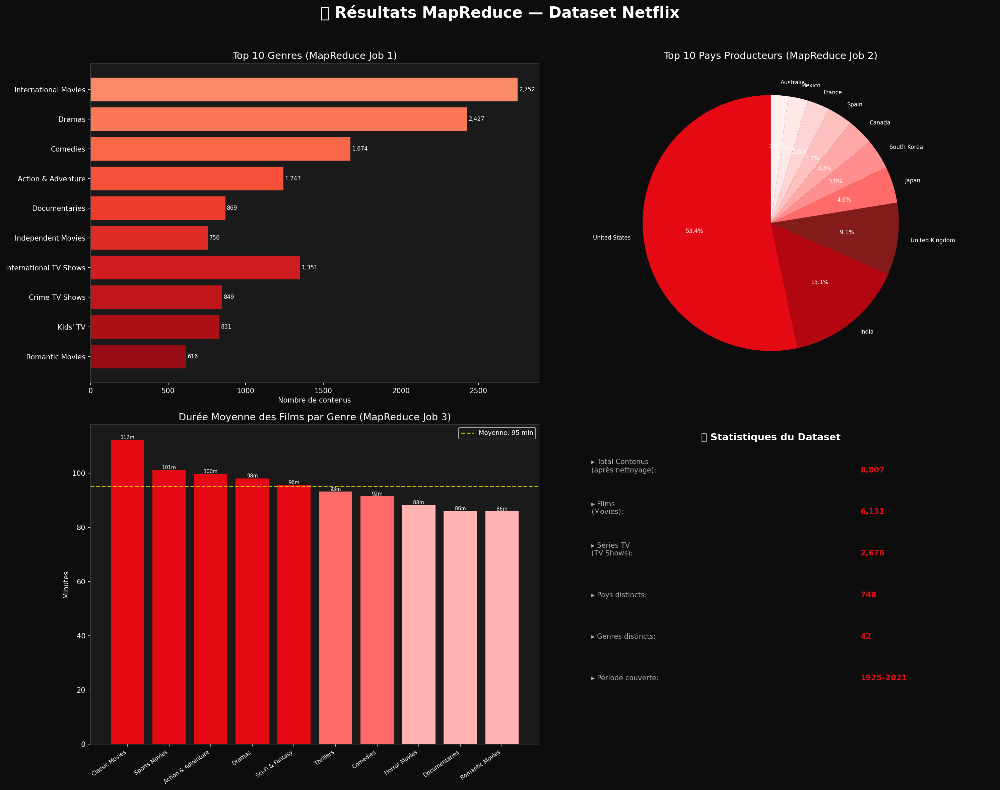
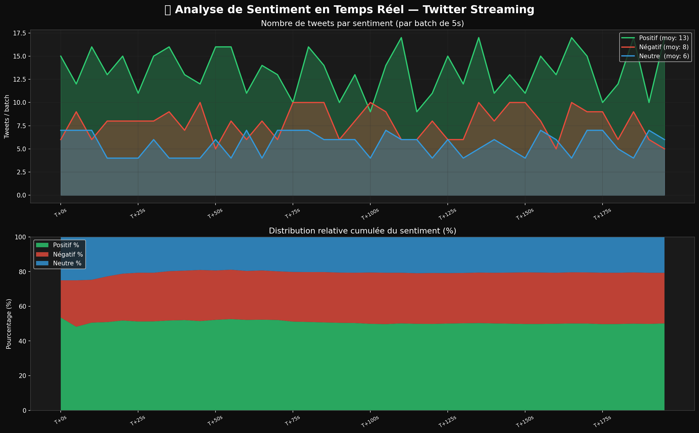

Analyse Netflix avec Hadoop MapReduce + PySpark + Twitter Streaming
| Conteneur | Rôle | Port |
|---|---|---|
namenode | NameNode HDFS + ResourceManager | 9870, 8088 |
datanode1 | DataNode 1 (stockage répliqué) | 9864 |
datanode2 | DataNode 2 (stockage répliqué) | 9865 |
Démarrer le cluster :
cd docker && docker-compose up -d
Colonnes : show_id, type, title, director, cast, country, date_added, release_year, rating, duration, listed_in, description

Twitter API v2 → Tweepy StreamingClient → Socket TCP (port 9999) → PySpark DStream → TextBlob + MLlib LogisticRegression → Visualisation
| Champ | Description | Exemple |
|---|---|---|
id | Identifiant unique du tweet | 1234567890 |
text | Contenu du tweet | "PySpark is amazing!" |
timestamp | Horodatage ISO 8601 | 2023-05-01T14:30:00 |
sentiment | Positif / Négatif / Neutre | Positif |
polarity | Score TextBlob [-1, 1] | +0.65 |

Pipeline Spark MLlib :
Tokenizer → StopWordsRemover
→ HashingTF (1000 features)
→ IDF (TF-IDF weighting)
→ LogisticRegression (C=100, maxIter=20)
Lancement streaming :
python spark/streaming_twitter.py --simulate
Avec vraies clés API :
export TWITTER_BEARER_TOKEN="..." && python spark/streaming_twitter.py